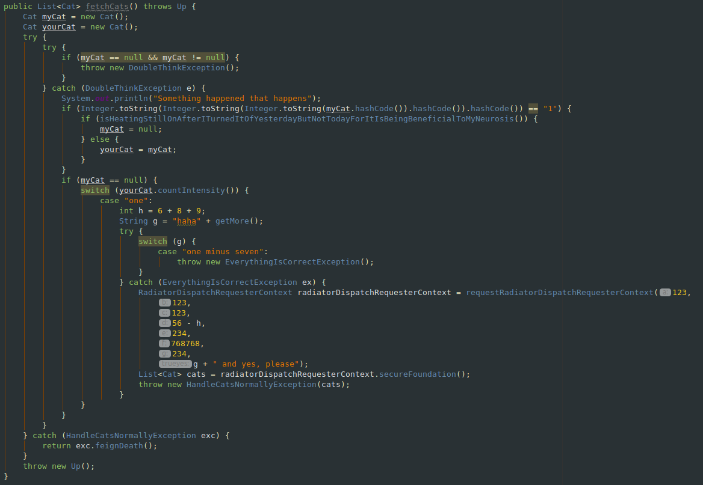

Welcome
In today's drowning current of tech revolutions, it is crucial to keep your edge. As a developer, you want to be ahead of the competition, to have what it takes to be an ardent professional in a world of ever-changing chaos, to become that center-piece building block in the future of your company that simply cannot be replaced and discarded.
For that to achieve, you need code.
Code that inspires
Code that puts everyone to shame.
Code in which the subtlety of genius pours out, captivates the mind
and embeds your worth deep into the threads of your organization.
In other words, to become indispensible, you need code that is indispensible, and by indispensible,
we mean a drug-induced, labyrinthine mess of an algorithmic jungle with pattern-desacrating stack trees
deeper than the pits of Tartarus, and execution paths running in circles like a cat chasing its tail.
Spaghetti Code
Why, you might ask...
Let's face the facts. According to statistics, designing proper software architecture with well thought out dependencies increases code transparency and maintainibility by a magnitude, shrinks the number of yearly heart attacks by the thousands and decreases workplace insults in which mothers are involved by a staggering 345 percent!
You might say, out of humanitarian reasons that lives and hearts are worth saving, and clean, colleague-friendly code is the way to go if you want your company to succeed, but funeral homes don't grow profit on trees. Undertakers or morticians (depending on which side of the pond you are on) are living, thinkink beings like you, and they need a constant influx of customers to feed their families. Writing code that prevents deaths means less meals on the table for their sons and daughters, and yes, you might argue that strains on the funeral market might transpose those heart attack deficiencies from the IT sector to the funeral service by causing more strokes among bankrupted undertakers, thus creating a sprawling niche of booming meta-undertaking businesses in which undertakers bury other undertakers with heart attacks, and I will counter it by saying, it causes a future drop of heart attack as the funeral business stabilizes, but you might add that indeed, a well-financed grave-market curtails stress among its professionals, bringing down risks of heart attacks, numbers of customers, and as a a result, profits, generating another crisis in the industry, but these new-found hardships can very well induce another wave of heart attacks, you say, among undertakers, and yes, you are perfeclty right that a self sustaining funeral market based on death toll fluctuations might set in, which, in the long run, remains stable, like the waveforms of some Brahmanistic alternating current, but you still have no rights to put programmers higher on the social ladder by letting undertakers drop by the thousands instead of your coding kin, for the grave bastards are the grey, nasty vultures of society who deserve to snuff it, and how dare you say that (and sentenced this sentence to lengths nobody asked for)!
- You see? That's what you get after such a moral degradation. Misery, pain and death!
- You want to change, don't you?
- You want to be compassionate, philantropic and understanding again?
- You see? That's why you need spaghetti code!
So that's what we do. Here, at Chthonic Pasta Outfit, we transform any code into an unintelligeble mess. You turn your code in, we spaghettify it, you keep your job. It's that simple.
nobody will dare to fire you
if nobody can read your code
Before:
After:

Scared of being confronted by your boss about the algorithmic Italian food you ordered? Worry not, my friend, for you are also provided free of charge with a detailed instruction set of master-crafted techno-babble to throw at your supervisors if they corner you
But...
...you might ask:
Why can't you spaghettify code yourself?
Well, it's simple. You may cook your own spaghetti, but if you are a gourmet, it's best to try a restaurant, after all, you
can't beat the professionals!
And why should you, if they are working for you?
Let's see what the kitchen holds for out potential customers:
- Chthonic Pasta Outfit works with a team of big data experts, who, by seeking correlations between employment histories and code readibility statistics are able to assess levels and types of spaghettification leading to the highest tiers of worker indispensibility and contract longevity.
- Hackers, private investigators and corporate spies supplement our ranks to gently "get to know" your management and figure out
what kind of spaghetti "tastes" the best for them, to deliver chaos that is tailored to the culture of your company and personality.
It's a mess that fits you! - We know that too much spice spoils the food. Our revolutionary StealthSpag algorithmic limiters ensure that spaghettification will never cross the line or go overboard with its tangledness, and help to keep our famed standards of subtlety and discretion. Your code will seem perfectly normal on a superficial inspection, but will hold surprises of existential horror if further investigated upon.
You are trying to build a career, a dream to come true, not be drowned in boring details you simply don't have the resources to deal with, and why should you? Live the life you've always dreamed of, and leave the crunch to the experts. Just send in your e-mail address if you are interested, and fascinating people in suits and shades will turn up near you in no time to negotiate about prices and services. Don't worry, we already know your location.
Chthonic Pasta Outfit
If it's past(a) your point of no return